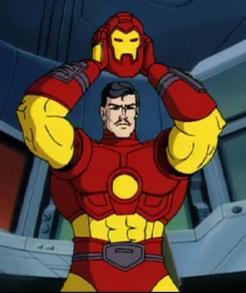

Finanza
Iron Man valuta un investimento nella redazione
Secondo voci sempre più insistenti, Tony Stark starebbe osservando i risultati mediatici della Tela del Ragno con interesse. Nessuna firma, ma in redazione c'è già chi discute se sostituire le sedie con armature leggere in vibranio.